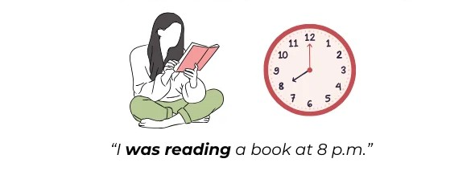
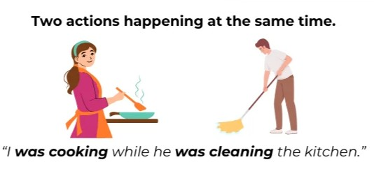
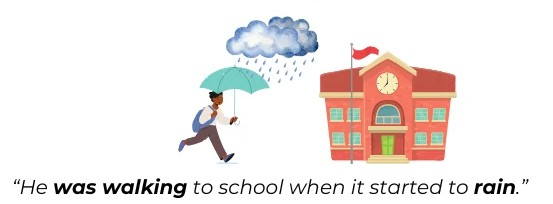
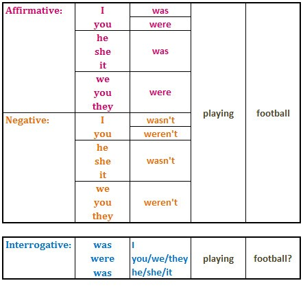

Past Continuous
When we use Past Continuous?
PC tense is used to describe an action that was in progress (not finished) at a specific time in the past.

PC tense is used to describe actions that were happening at the same time.

PC tense is used to describe an action that was interrupted by another action in the past.

Structure

Practicing What I've Learned
Practicing What I've Learned: responde las preguntas aquí mismo y revisa tu puntaje.
Practice & More Info
- In this link you can find more information about the Past Continuous tense: Past Continuous
- In this link you can find exercises to practice the Past Continuous tense: Past Continuous Exercises